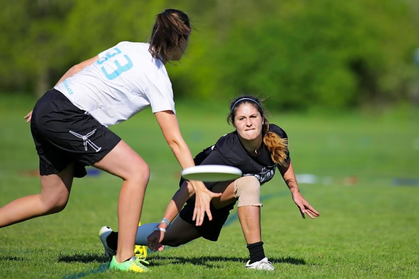

NEED GUM?
Taneyah Jolly

GUM or Girls Ultimate Frisbee movement is a growing movement that needs more support and followers; the problem is no one knows what ultimate is. Much like the development of widely-known sports, such as soccer and basketball, ultimate is still being popularized. This often means that women’s teams are being ignored. Popularized sports still have large wage-gaps and systemic discrimination against women, so as people continue to push for ultimate to be treated with the same respect as other sports, only the men’s teams are put in that spotlight. As hard as it is to have women in the spotlight, it is even harder to have women of color, LGBT+ women, and women with intersectional identities in the spotlight. Even lower level women ultimate players can not envision a career as professional players. Ultimate also allows people with non-binary gender identities to have a safer place in sports because of the semi-professional co-ed teams. It is hard to take action for a movement when the basic foundations of it are not popular.
Learn More about Ultimate
